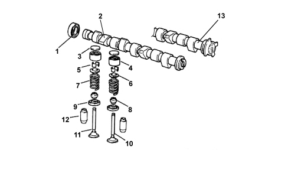
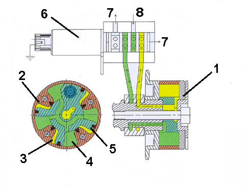

INTRODUCTION - TIMING SYSTEM
- Path
- Descriptions > 10 ENGINE > 1036 TIMING SYSTEM > INTRODUCTION - TIMING SYSTEM
- Kind
- system description
- Applies to
- engines: 1.4 8v; all production periods
- Interactive page
- https://sloeber94.github.io/elrnDB-fDbl/en/#/223000208
Applies to: engines: 1.4 8v; all production periods
SPECIFICATIONS
A cast iron overhead camshaft operated by a timing belt.
COMPOSITION
There are the same number of suitably positioned, profiled cams on the shaft as the valves to be operated; at the front there is provision for fitting a toothed pulley through which to receive movement from the crankshaft by means of a suitably tensioned timing belt.
On the 1.4 8v version the toothed pulley is incorporated in the phase transformer described below.

1. Crankshaft oil seal
2. Camshaft (1.2 8v version)
3. Tappet adjustment shim
4. Tappets
5. Cotters
6. Upper shim
7. Spring
8. Oil seal
9. Lower shim
10. Inlet valve
11. Exhaust valve
12. Valve guide
13. Camshaft with phonic wheel (1.4 8v version)
PHASE TRANSFORMER (1.4 8v version only)
Specifications
The 1.4 8v EVO2 engine is equipped with a "continuous" phase transformer capable of modifying the position of the camshaft in relation to the crankshaft.
In this way the engine is working with optimum timing in all operating points.
The phase transformer is managed entirely by the engine management control unit which:
- detects the camshaft position via the timing sensor;
- alters this position according to the engine operation on the basis of a calibrated map;
- keeps the camshaft position under control.

1. Driven pulley
2. Stator
3. Advance compartment
4. Delay compartment
5. Rotor
6. Cassette solenoid valve
7. Oil return
8. Oil inlet
Operation
The phase transformer actuator comprises a rotor in one piece with the camshaft that can rotate in relation to the pulley (stator) moved by the crankshaft. The rotor is equipped with vanes and moves through the effect of the engine oil pressure on the vanes.
There are two compartments (the advance compartment and the delay compartment) created at the two sides of each of these vanes: the oil can flow into one compartment or the other.
The pressure of the oil entering a compartment pushes the vane to one side and the oil in the other compartment is discharged to the cylinder head. The rotor is and consequently the camshaft are thereby rotated in a certain direction (advance or delay).
If the engine oil alternatively enters one compartment and the other continuously for the same time, the pressures at the two sides of the rotor are dynamically balanced and it remains still.
The flow of engine oil is activated by a cassette solenoid valve which places the oil ducts in the cylinder head in contact with the advance or delay compartments.